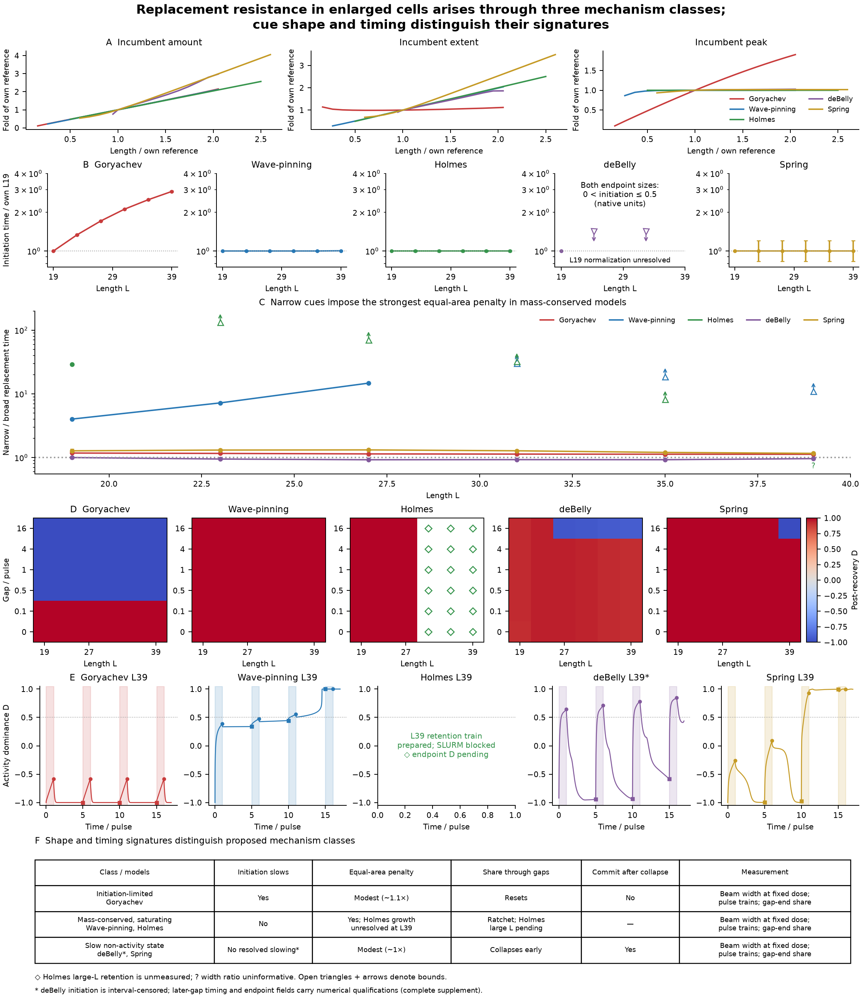

Generated 2026-10-22T10:56:42.328763+00:00. Producers finished; Holmes simulations are unsubmitted.
In-progress outline review · Three main plates
Enlarged cells resist imposed replacement through distinct initiation, spatial and temporal response signatures (Figure 2); the proposed class interpretation still awaits the specified Holmes large-size retention measurements. At matched distance, size dominates driven takeover, while enlarged cells reach larger separations where cue-free resolution in mass-conserved models becomes very slow or unresolved (Figure 3). Enlarged cells hold heading longer under fluctuating input — at or above the geometric expectation at weak input — and the advantage declines as input strengthens. (Figure 4). Weak-input geometric comparisons describe point estimates; Holmes and Spring intervals also admit sub-geometric gains. Observed migration summaries, conditional OU velocity-memory estimates and simulated polarity-heading readouts remain separate evidence.
Final outline_v5 integration awaits the specified Holmes measurements. Nine optional Figure 3 Holmes extensions await author review; none were submitted. Class membership is unchanged.
